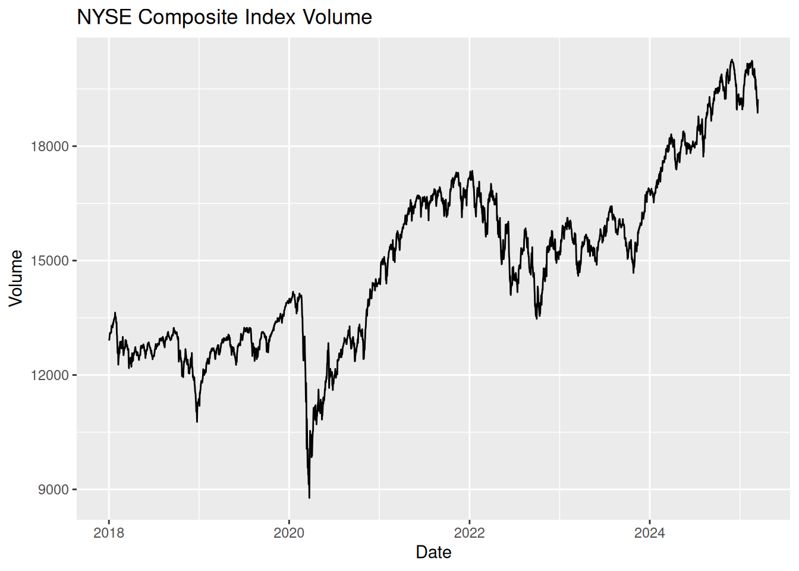

Nyquist frequency: Max detectable frequency = \(f_{\text{max}} = \frac{1}{2\Delta t}\)
Frequency resolution: \(\Delta f = \frac{1}{N\Delta t}\)
Number of harmonics (K): Balances complexity vs. overfitting
Harmonics represent pairs of sine/cosine waves that collectively approximate complex seasonal patterns. Think of them as “building blocks” for seasonal shapes. We can capture periodic patterns in time series data using Fourier terms and periodic regressions. Fourier terms in regression models:
\[y_t = \beta_0 + \sum_{k=1}^K \beta_k\cos(2\pi kt/m) + \gamma_k\sin(2\pi kt/m) + \epsilon_t\] where \(m\) = seasonal period
Activity: Optimize Fourier terms via cross-validation.
We retrieve real NYSE Composite index data (ticker ^NYA), extract the adjusted price, and apply Fourier regression to capture seasonal patterns.
# 1. Get NYSE Composite index data (volume) from tidyquant and convert to tsibblenyse <-tq_get("^NYA", from ="2018-01-01") %>%as_tsibble(index = date) %>%fill_gaps() %>%mutate(adjusted = imputeTS::na_ma(adjusted, k =21))# Plot adjusted seriesnyse %>%autoplot(adjusted) +labs(title ="NYSE Composite Index Volume", y ="Volume", x ="Date")

Fit seasonal models using Fourier terms (using 1 and 2 harmonics) with cross-validation for model selection.
Task: For the following COVID data, compute daily new confirmed cases, and try fitting the periodic regression with Fourier terms with different seasonal periods (e.g., 7-day vs. 14-day cycles) and compare the residual diagnostics.
References
Guidotti, E., Ardia, D., (2020), “COVID-19 Data Hub”, Journal of Open Source Software 5(51):2376, doi: 10.21105/joss.02376